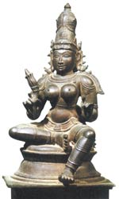

Парваті ("дочка гір"), в індуїстської міфології одне з імен дружини бога Шиви. Вона дочка царя гір Хімават і мати слоноподібного бога Ганеші, якого створила зі свого поту.
Відповідно до одного з міфів, Шива породив шість дітей без участі Парваті. Богиня полюбила крихіток чоловіка і одного разу так міцно обняла, що їх тіла злилися в одне, утворивши хлопчика з шістьма головами. Згодом він став богом воїни скандію.
Згідно з іншим переказом, Парваті, вперше побачивши скандію, відчула такий приплив материнської любові і ніжності, що з її грудей полилося молоко.
Відомий міф про те, як Шива дорікнув Парваті за те, що вона темношкіра. Від сорому богиня пішла в ліс і стала аскетом. Брахма високо оцінив самозречення Парваті і перетворив її в Гаури. богиню із золотою шкірою. Одного разу Парваті, бажаючи пожартувати над чоловіком, підкралася ззаду до Шиві і закрила його очі руками. Темрява охопила світ і тоді Шива створив собі третє око в лобі.